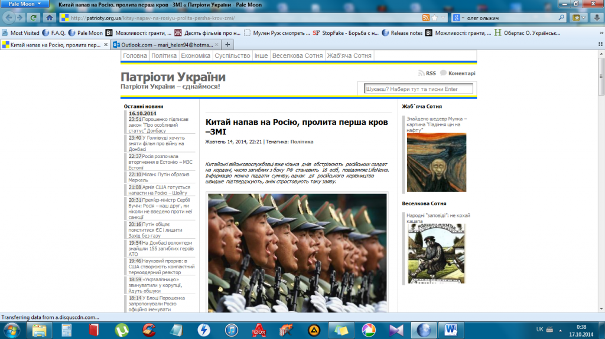

Фейк: Китайские военнослужащие обстреливают российских солдат на границе
Ссылаясь на российский телеканал LifeNews, несколько украинских информационных сайтов распространили фейковую новость о нападении китайских войск на российскую границу.Вследствие боев на пограничной территории якобы погибло 16 солдат РФ.Эта псевдо-новость быстро распространилась в соцсетях и на форумах.
Для подтверждения достоверности информации предоставляются слова Министра иностранных дел Сергея Лаврова о «массивных артиллерийских обстрелах с китайской территории», соответствующий приказ Владимира Путина о приведении в боевую готовность войск Восточного округа, а также материалы СМИ и абстрактных «местных блоггеров».
Однако все эти «доказательства» выдуманы неизвестным автором.
Ни одним источник не подтверждает данной информации – ни на сайте Президента РФ, ни на сайте Минобороны РФ, ни на сайте Министерства иностранных дел РФ нет сообщений о китайской агрессии.Нет никаких других официальных подтверждений как со стороны России, так и со стороны Китая.На сайтах Lifenews и Цензор.нет, на которые непосредственно ссылаются авторы статьи, также нет никаких новостей по данной теме.
Следует отметить, что откровенная ложь украинских СМИ играет на руку российской пропаганде.В таких ситуациях представители известных прокремлевских сайтов и телеканалов не гнушаются использовать «очередное доказательство вранья украинских СМИ», создавая таким образом фейк из фейка.
Posted On: 2014-10-16T21:00:00

Content Date: 2014-10-16
Download Date: 2021-07-16
Document ID: L0C04FHAB